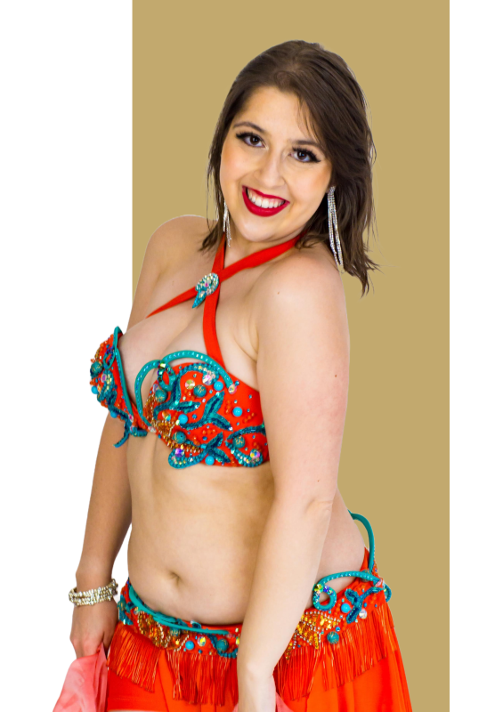

MARINA
PERETTO
Bailarina, professora, coreógrafa
e pesquisadora de Danças Árabes

Confira um pouco da minha trajetória artística através de fotos e vídeos.
Bailarina, professora, coreógrafa
e pesquisadora de Danças Árabes
Acredito que o estudo constante é a chave para a evolução artística. Minha formação inclui:
É com grande honra que compartilho alguns dos reconhecimentos e premiações que tive o privilégio de receber ao longo da minha carreira.
Esses momentos são o reflexo de dedicação, paixão e um constante esforço em aprimorar minha arte e levar a dança árabe a novos patamares, sendo um incentivo para continuar a trilhar este caminho com excelência e autenticidade.
Ao longo de mais de 15 anos dedicados às danças árabes, construí uma trajetória sólida e diversificada, explorando diferentes vertentes e estilos desta arte milenar.
Minha experiência abrange desde apresentações em teatros renomados até workshops internacionais, sempre buscando a excelência técnica e a autenticidade cultural em cada performance.
Minhas performances são caracterizadas pela fusão harmoniosa entre técnica apurada e expressão emocional autêntica, criando experiências únicas para o público.
Cada apresentação é cuidadosamente preparada, desde a escolha musical até os detalhes do figurino, garantindo que a essência da dança árabe seja transmitida de forma respeitosa e envolvente.
A transmissão do conhecimento é uma das minhas maiores paixões. Desenvolvi uma metodologia própria que combina técnica tradicional com abordagens pedagógicas modernas.
Acredito que cada aluna possui um potencial único, e meu papel é guiá-la na descoberta de sua própria expressão artística através da dança árabe.
Ministro workshops e masterclasses em todo o Brasil, compartilhando conhecimentos técnicos e culturais sobre as danças árabes.
Cada workshop é uma oportunidade de mergulhar profundamente em aspectos específicos da dança, desde técnicas de véu até interpretação musical e história cultural.
Dedico parte significativa do meu tempo à pesquisa sobre as origens e evolução das danças árabes, contribuindo para a preservação e disseminação desta rica tradição cultural.
Através de estudos aprofundados e viagens aos países árabes, busco sempre aprimorar meu conhecimento e garantir a autenticidade em meu trabalho artístico e pedagógico.